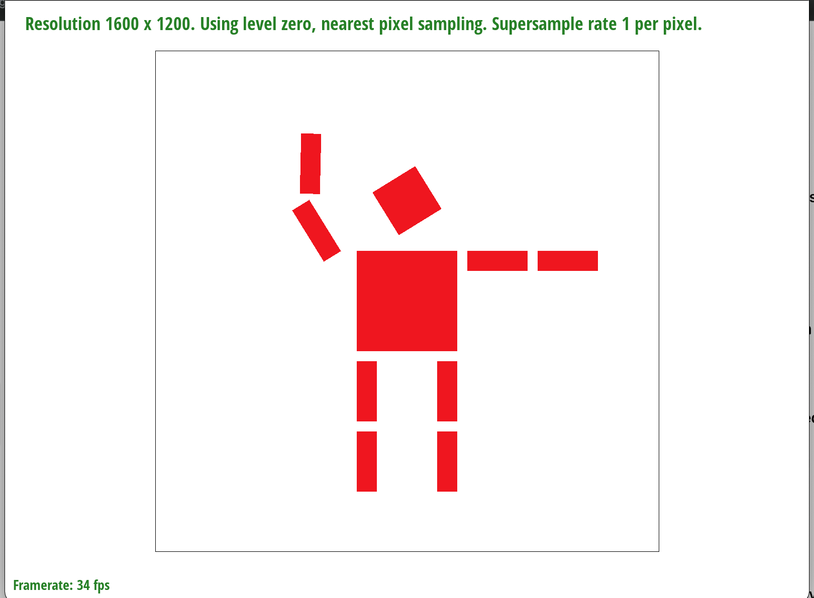
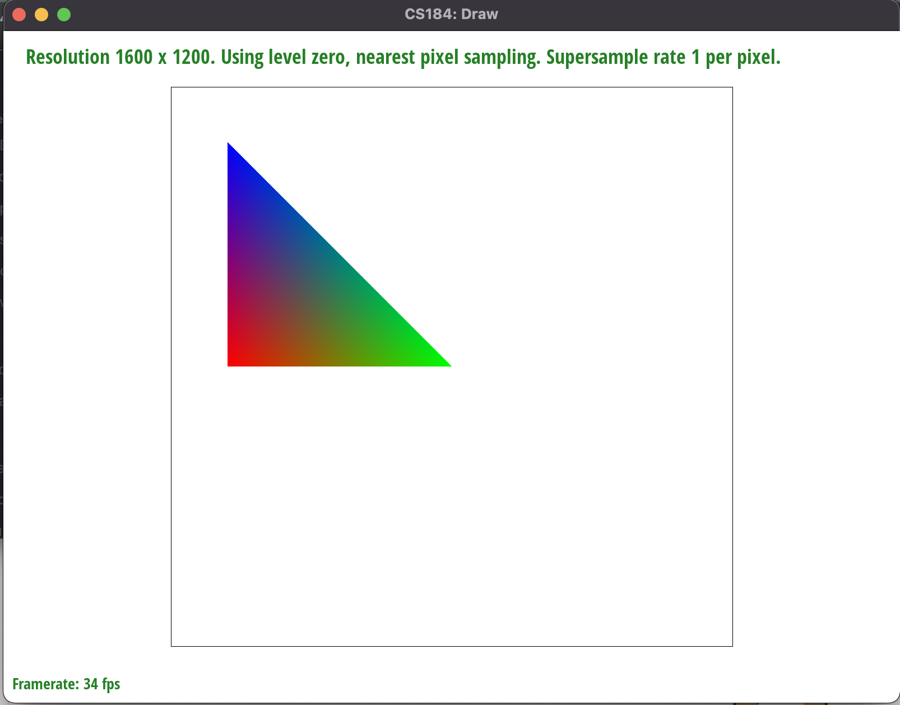
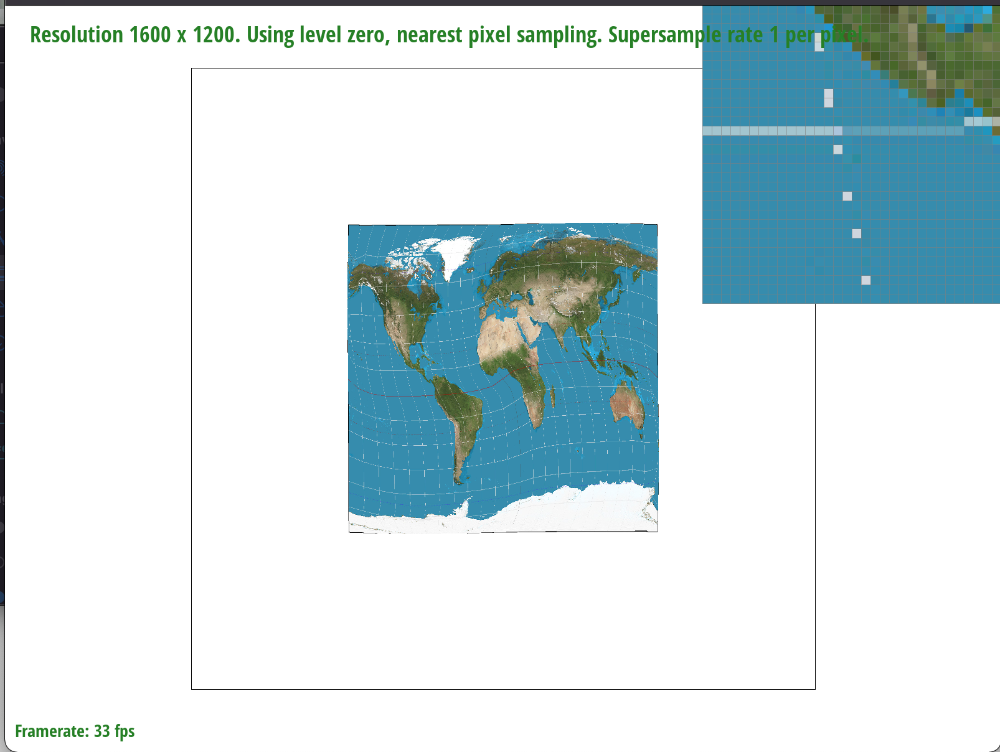
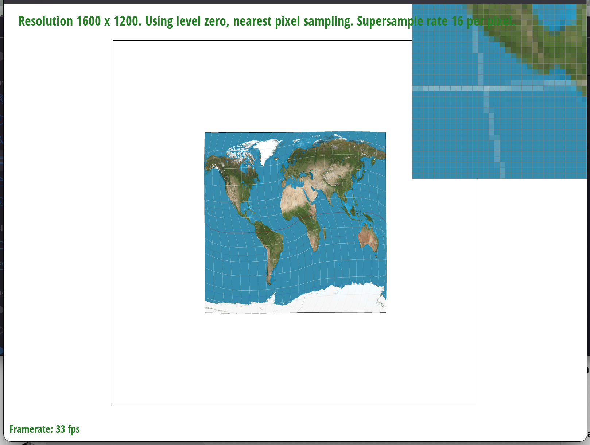
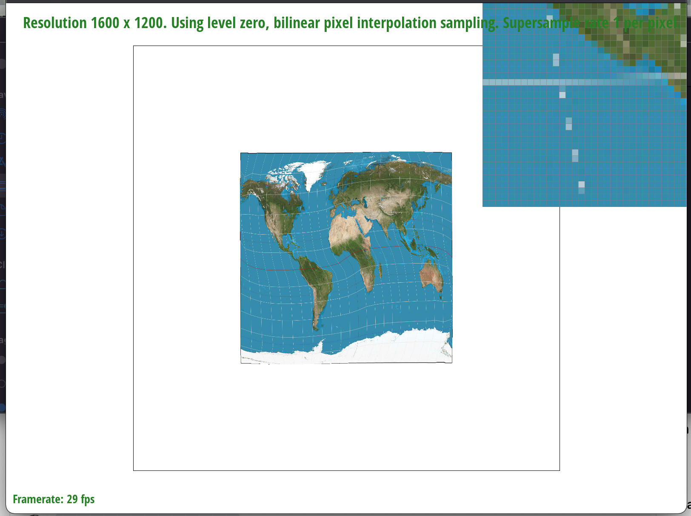
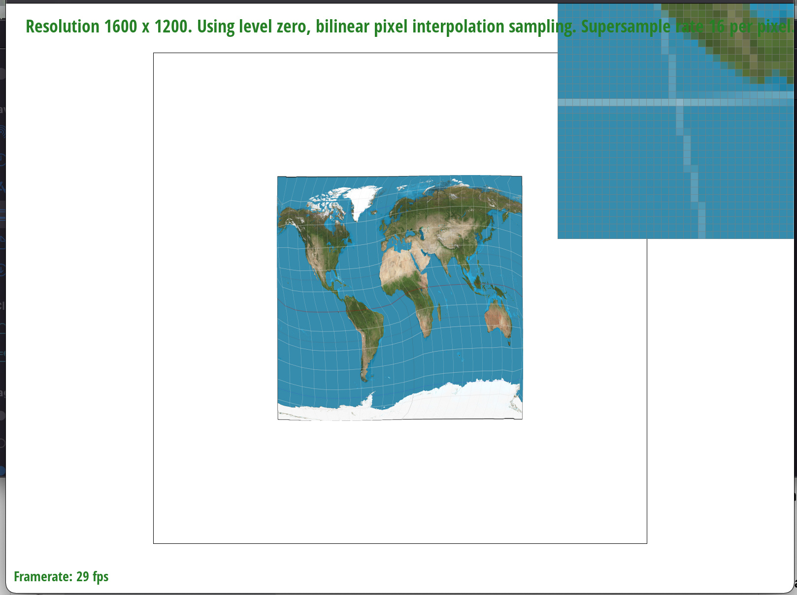
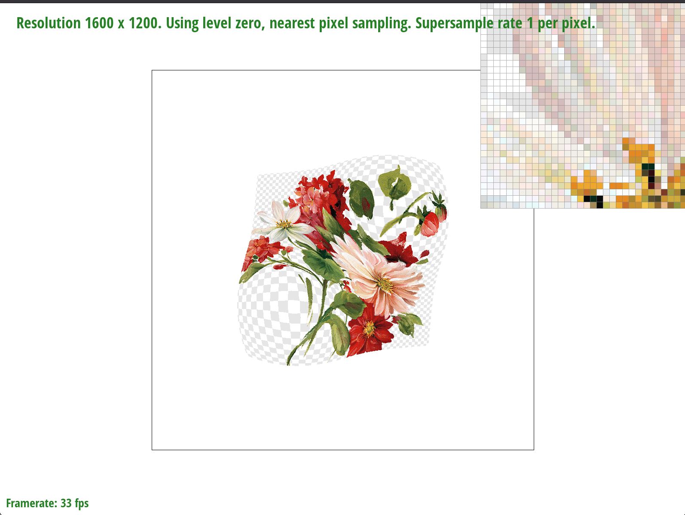
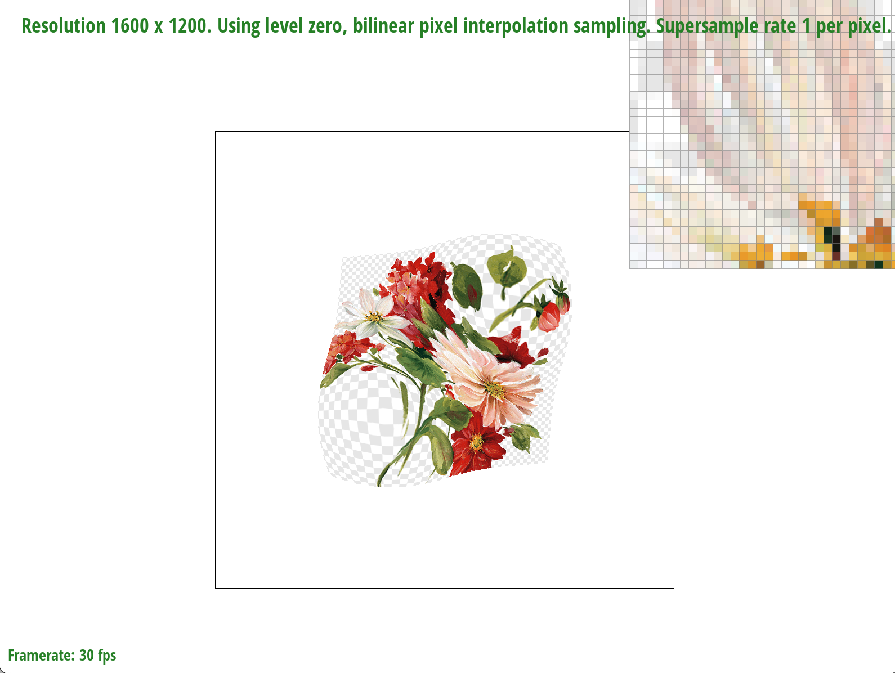
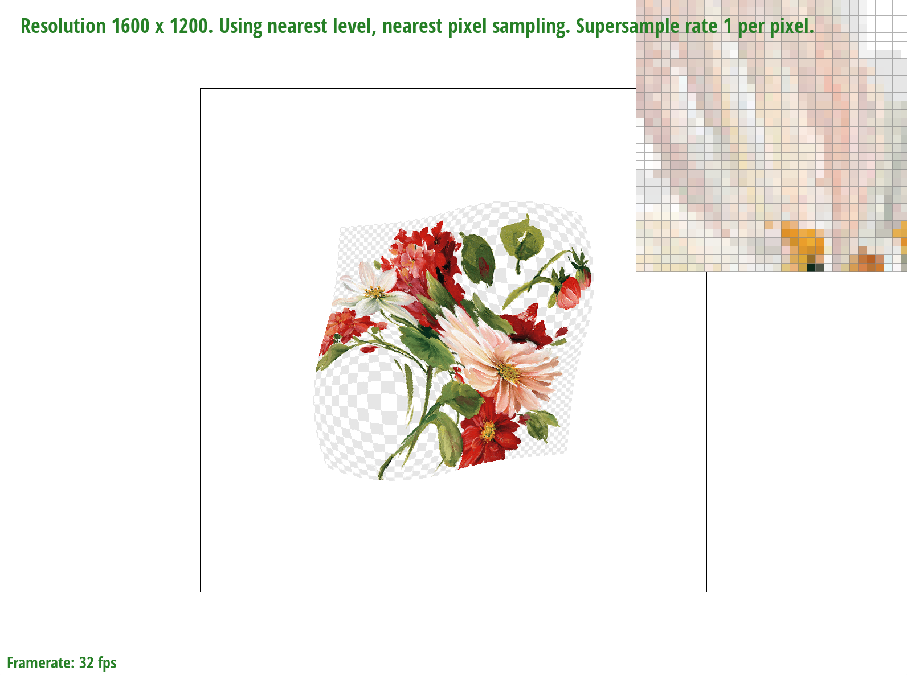
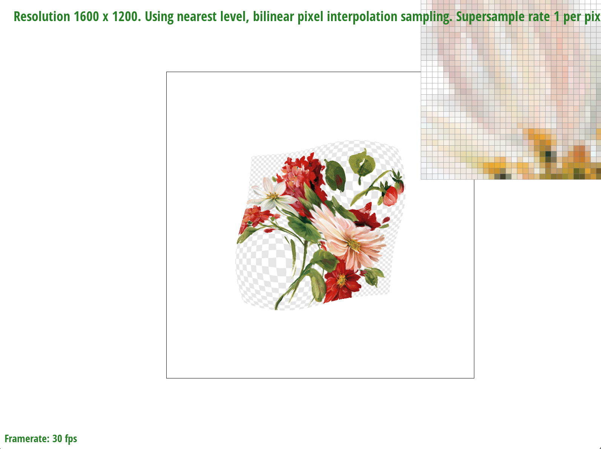

In this project we implemented various methods to fill and render triangles with desired colors at different sampling frequencies. These techinques ranged from basic solid color assignment to barycentric interpolation between color and texture. In order to support these rendering techniques, we also implemented various sampling methods to determine what color different parts of a triangle shoudl be. By implementing these features, we have ultimately created a way to render any png over any surface as long as it could be broken down into representative triangles. Some of the most interesting things learned through completing the project were the different techniques used to interpolate between discrete values to determine the value at a continuous point. Interpolation using barycentric coordinates in particular was extremely interesting to see, since it was a way to interpolate between 3 values across 2D space rather than the traditional interpolation between 2 values at two points along the vector between those two points.
In our triangle rasterizing algorithm, we create a bounding box based on the minimum and maximum x and y coordinates of the corners of the triangle, while also taking into consideration the boundaries of the screen. Then, we iterate through each coordinate within this bounding box, and use vectors perpendicular to the lines that define the edges of the triangle to check if each point is within the triangle or not; this is done by checking if a point is inside the triangle when the points are defined either clockwise or anticlockwise (i.e. checking that the dot product of a point and the perpendicular vectors are all either < 0 or >= 0). If a point is inside the triangle, the corresponding pixel is rasterized with the appropriate color.
To implement supersampling, we introduced another variable when iterating through the samples in a triangle to denote the index of a supersample within a pixel. This variable k is defined such that floor(k/sqrt(supersampling rate)) is the row of the supersample within a pixel, and k mod sqrt(supersampling rate) is the column. For each supersample, we calculate its appropriate (x,y) coordinates and fill the buffer with the same algorithm as task 1. Then, upon populating the frame buffer from the sampling buffer, we average each supersample within a pixel to get the color of the pixel. This supersampling algorithm is helpful to prevent antialiasing because we are able to sample more high frequencies through supersampling, and then by averaging the supersamples we are filtering out the high frequencies, which reduces artifacts from directly sampling them.
For this task, we simply implemented the 3x3 2D homogeneous transform matrices to be returned. For translation, the rotation matrix is the 2x2 identity, and the translation vector reflects our desired change in position. For scaling, the rotation matrix becomes a 2x2 scaled diagonal matrix, with the elements of the diagonal as our x and y scales respectively. Our rotation matrix follows the standard 2x2 rotation matrix, defined by the trigonometry of rotated vectors. We made cubeman wave by rotating the entire left arm upwards (clockwise about the shoulder), and additionally rotating the forearm limb more in this direction about the elbow joint.
Barycentric coordinates are three scalar values used to describe the ratio between the perpendicular distance from a point to each edge of the triangle, and the perpendicular distance from that line to its opposite edge. When properties like color or texture coordinates are assigned to each of the 3 corners in the triangle, we can use the barycentric coordinates as “likeness” indicators to know how much or how little of the properties in each corner to adopt at any given point inside the triangle; the closer to a corner, the more strongly its properties will be adopted. Since barycentric coordinates will always add up to equal 1, this results in a smooth transition between the property “extremes” at the three corners of the triangle over the other points inside the triangle.
Pixel sampling is the act of attempting to map a desired texture coordinate to an appropriate color when the desired texture coordinate is in continuous space but the texture map is in discrete space. We can sample one or multiple colors from the texture map in order to get or construct our color to rasterize. In nearest sampling, we simply find the nearest coordinate that exists in the texture map to our desired texture coordinate, and use that color. In practice, this just means rounding the (u,v) coordinates to integer indexes to use on the texture map. In bilinear sampling, we find the four colors closest to our desired texture coordinate, top_left, top_right, bottom_left, and bottom_right. Then, we find a top and bottom color based on the weighted averages of the two top and two bottom colors, weighted based on (1 - distance) from our desired coordinate. Then we find a similarly weighted average between the top and bottom colors to produce a final color.
|

|

|
|

|

|
Bilinear sampling filters out more high frequencies than nearest sampling, due to the nature of the weighted averaging. This is better for images where there may be aliasing, such as in the grid lines on the map images.
Clearly, increasing the sampling rate and using bilinear sampling instead of nearest sampling both decrease the amount of aliasing. This is most clear where there are sharp, defined lines, which produce jaggies and other artifacts with aliasing.
Level sampling is similar to pixel sampling, where it attempts to map a texture coordinate, which may be continuous in texture space as well as lie in between mip levels, to colors stored for discrete points in this space. There are different policies taken to try and determine the color of a continuous point when only having information about discrete locations. Three of them that we implemented are level-zero sampling, nearest level sampling, and bilinear level interpolation. Level-zero sampling just means always sampling from the 0th level of the mipmap, nearest level sampling involves rounding the continuous value for mip level of a coordinate in texture space to the nearest integer value in order to sample from that level in the mip map. Finally, bilinear level interpolation is a very idea to bilinear pixel sampling, except instead of sampling nearby locations within a mip level, we are just taking the colors assigned to a texture location for the nearest two mip levels and interpolating between them based on how close the current texture coordinate is to those two levels.
|

|

|
|

|

|
In terms of memory usage, mipmaps and supersampling both use additional memory, which is used for storing additional mip levels and additional samples respectively. Both of these methods store extra pixels either in the form of a larger texture or multiple textures of different scales. However, bilinear interpolation does not take additional memory.
In terms of speed, supersampling is the least efficient: supersampling requires a magnitude of more pixel calculations proportional to the extra pixels in the sample buffer. Bilinear interpolation is slightly slower than nearest interpolation because it requires averaging colors across four samples, but the amount of computation here is relatively small so it is relatively efficient. Mipmapping similarly has a small amount of extra computation per pixel to calculate the correct pixel, but not to the degree of inefficiency of supersampling; however, there is more overhead for the construction of the mipmap.
In terms of antialiasing, supersampling is the most effective if it is used at high sampling rates: we are able to directly filter out higher frequencies from the image, which results in much smoother images if we are able to capture all high frequencies with the supersampling rate. However, at lower supersampling rates, specifically at a sampling rate of 4, we see results similar to bilinear interpolation, as both of these methods are taking averages across four pixels. Mipmapping is less comparable to the other techniques because the level of antialiasing/blurring is proportional to the resolution, but it is generally more effective at antialiasing for lower resolutions.
If you are not participating in the optional art competition, don't worry about this section!